log2 i
log2 i (for 1≤i≤n) ≤ S(n) ≤ (3n2 – n)/2.
(for 1≤i≤n) ≤ S(n) ≤ (3n2 – n)/2.Problem #1: The designers of a sports tournament want not only to identify the best player, but to completely rank the players. Assuming that the best player always wins a match, and assuming that the match schedule can not depend on the results of earlier matches, how many rounds and matches are necessary to do this? For example, the shortest tournaments for 2, 3, or 4 players are shown below. Time travels from left to right, the matches are represented by boxes, and the output of each box is assumed to be sorted.
In general, assume that we are playing some game where k players play at a time, and that the results of a match rank the k players. How many rounds and matches does it take to completely rank n players? How do the answers change if we only want to identify the top p players? How do the answers change if each match only identifies the best player?
It turns out that for k=2 these have been well-studied and are called Sorting Networks. Gavin Theobald sent me this page.
Let S(n) the fewest games needed to sort n players. Sune Kristian Jakobsen proved that ∑ log2 i (for 1≤i≤n) ≤ S(n) ≤ (3n2 – n)/2.
Corey Plover told me that Donald Knuth covered this problem in Section 5.3.4 of "The Art of Computer Programming", Volume 3, and sent two figures from that section. He also gave me some other references:
R.J. Nelson and R.C Bose showed that S(2n) ≤ 3n – 2n and therefore S(n) = O(nlog 3) in [JACM 9 (1962) p282-296].
T.N. Hibbard found a simpler construction using the same number of comparisons in [JACM 10 (1963), p142-150].
R.W. Floyd and D.E. Knuth proved S(n) = O(n1+c/√(log n)) in [Notices of the Amer. Math. Soc. 14 (1967), p283].
R.L. Drysdale and F.H. Young showed S(256) ≤ 3651 in [SICOMP 4 (1975), p264-270].
Ajtai, Komolos and Szemeredi showed that S(n) = O(n log n) in [Combinatorica 3 (1983), p1-19].
Here are the smallest known sorting tournaments for k=2:
| n | S(n) | rounds needed |
|---|---|---|
| 1 | 0 | 0 |
| 2 | 1 | 1 |
| 3 | 3 | 3 |
| 4 | 5 | 3 |
| 5 | 9 | 5 |
| 6 | 12 | 5 |
| 7 | 16 | 6 |
| 8 | 19 | 6 |
| 9 | 21-25 | 7 |
| 10 | 25-29 | 7 |
| 11 | 29-35 | 7-8 |
| 12 | 33-39 | 7-8 |
| 13 | 37-45 | 7-9 |
| 14 | 41-51 | 7-9 |
| 15 | 45-56 | 7-9 |
| 16 | 49-60 | 7-9 |
| 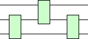 | 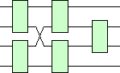 | 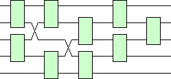 |
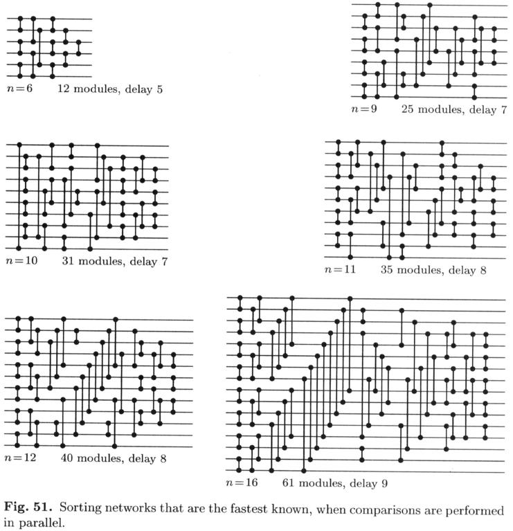
Here are the smallest known sorting tournaments for k=3:
| 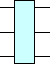 | 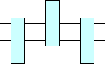 | 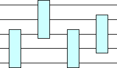 | 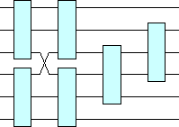 | 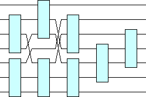 |
| 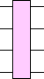 | 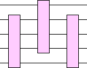 | 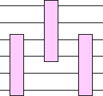 | 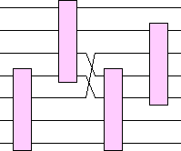 | 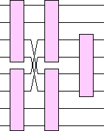 |
Problem #2:
Here are the smallest known aspect ratio tree packings:
| ai | aspect ratio | building |
|---|---|---|
| 8 | >1 | 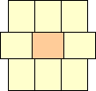 |
| 82 | >1 | 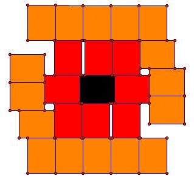
(Jeremy Galvagni) |
| 72 | >1 | 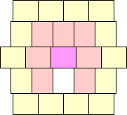 |
| 62 | 1 | 
|
| 622 | >1 | 
|
| 63 | >4/3 | 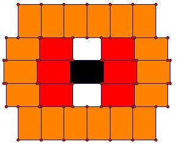
(Jeremy Galvagni) |
| 522 | 1 | 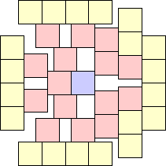 |
| 5222 | 3/2 | 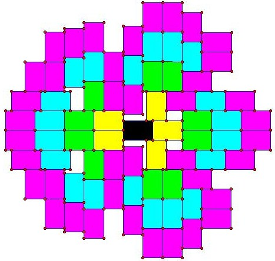
(Jeremy Galvagni) |
| 523 | >4/3 | 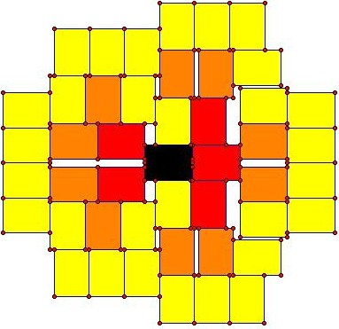
(Jeremy Galvagni) |
| 53 | >1 | 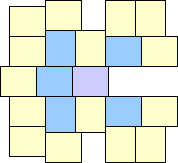 |
| 423 | 1 | 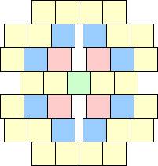 |
| 4232 | ? | ? |
| 424 | >7/4 | 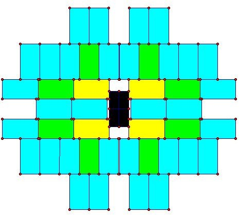
(Jeremy Galvagni) |
| 432 | 1 | 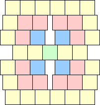 |
| 4322 | ? | ? |
| 433 | >8/5 | 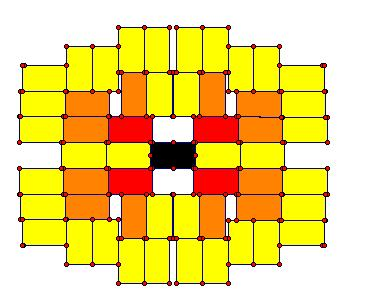
(Jeremy Galvagni) |
| 44 | >1 | 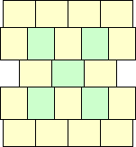 |
| 34 | 1 | 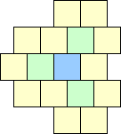 |
| 342 | >1 | 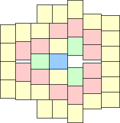 |
| 35 | >1 | 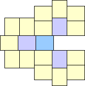 |
| 22222 | 1 | 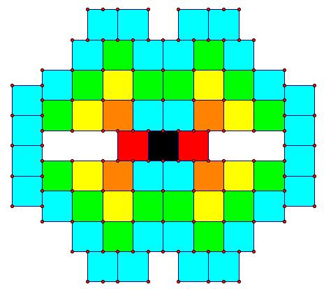
(Jeremy Galvagni) |
| 222222 | ? | ? |
| 22223 | ? | ? |
| 2224 | 1 | 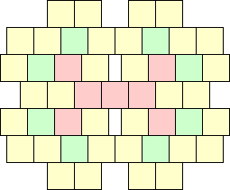 |
| 22242 | ? | ? |
| 2225 | >4/3 | 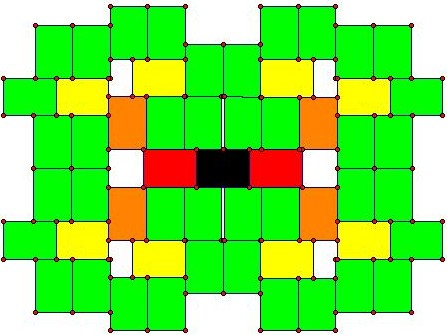
(Jeremy Galvagni) |
| 224 | 1 | 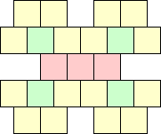 |
| 2242 | >1 | 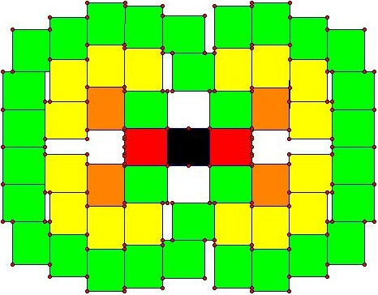
(Jeremy Galvagni) |
| 225 | >1 | 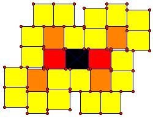
(Jeremy Galvagni) |
| 233 | 1 | 
|
| 2332 | >10/7 | 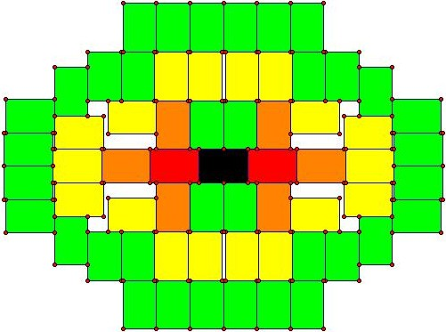
(Jeremy Galvagni) |
| 234 | 3/2 | 
(Jeremy Galvagni) |
| 242 | 1 | 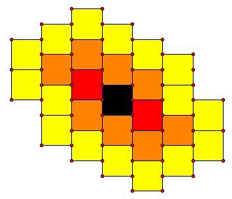
(Jeremy Galvagni) |
| 2422 | >6/5 | 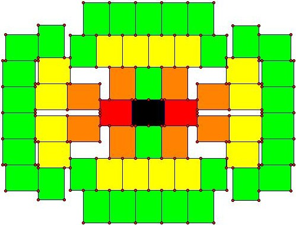
(Jeremy Galvagni) |
| 243 | >4/3 | 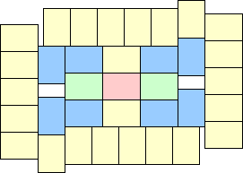 |
| 25 | 1 | 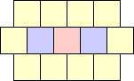 |
| 252 | >1 | 
|
| 26 | >1 | 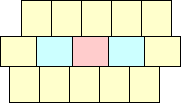 |
| 27 | >4/3 | 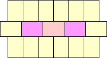 |
If you can extend any of these results, please
e-mail me.
Click here to go back to Math Magic. Last updated 12/3/06.